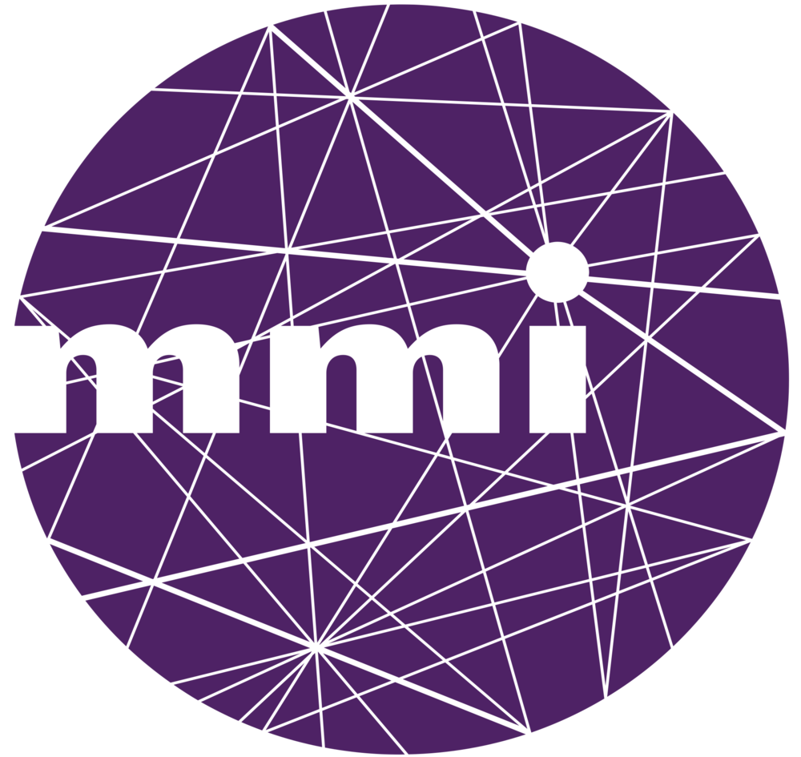

DUT MMI

LA FORMATION DES MÉTIERS DU WEB ET DU MULTIMÉDIA
UNE FORMATION UNIVERSITAIRE
Intégrer un DUT MMI c’est choisir une formation sélective, basée sur un programme national commun pour obtenir un diplôme délivré par l’Université. La formation est aujourd’hui dispensée dans plus de 30 universités réparties sur toute la France et permet de poursuivre vers une spécialisation en Licence Professionnelle, vers une autre formation universitaire accessible à Bac+2 ou une école spécialisée.
UNE FORMATION PLURIDISCIPLINAIRE
Intégrer un DUT MMI c’est s’assurer d’acquérir une expertise globale sur les métiers du multimédia et de l’internet et de maîtriser des compétences techniques polyvalentes. La formation couvre tous les champs du digital, de la réalisation de sites internet à l’animation de communautés, de la création vidéo à la conception de contenus.
UNE FORMATION PROFESSIONNALISANTE
Intégrer un DUT MMI c’est suivre une formation qui permet aux étudiants de mettre en pratique leurs compétences pendant les projets tutorés, de réfléchir à leurs aspirations au travers du Projet Personnel et Professionnel (PPP) et de se confronter aux métiers lors de stages en entreprise de 10 semaines.
L'IUT d'Elbeuf est construit sur le site des anciennes usines textiles. Il a été totalement réhabilité en 2002 afin d'y édifier un nouveau bâtiment.
Cette antenne de l'IUT de Rouen comprend un amphi de plus de 120 places, de nombreuses salles de cours, des salles de travaux pratiques dédiées à la programmation
et à l'intégration web ou bien à l'infographie, ainsi qu'un studio adapté à l'enseignement de la création vidéo.